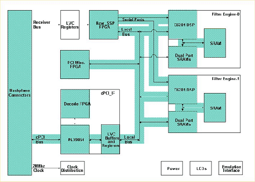

Operating Documentation
Direction 5440001-3, Rev# 6
Signa HDxt Service Methods
Module Version 2.0, Version Date 6/3/10
Operating Documentation |
Diagnostics >> MGD Chassis >> MGD BLD
The Digital Receiver Functions (DRF) Board Level Diagnostic (BLD) performs the tests listed below. Patterns used to validate the memory are selectable and are listed below.
This diagnostic targets all functions on the DRF board. It does not test any interconnects to other boards. The items highlighted in green in the following block diagrams show what is been tested.
Minimum configuration
Host computer
MGD chassis with all processor boards, bridge, and DRF
Illustration 1: DRF BLD Diagnostic Block Diagram

Registers Initial State Verification
Registers Write Verification
PCI DMA Tests
C6X Self Tests
C6X to APS FE Interrupt Tests
APS to C6X Begin Acquisition Interrupt Tests
APS to C6X APS Interrupt Tests
Serial DSP Data Path Tests
Memory Patterns:
MINIMUM or Power Up = 0's, F's, and an Address Test (Incrementing values)
Short = 0's, F's, A's, 5's and an address test.
Medium = 0's, F's, A's, 5's, walking 1's, and an address test.
Long = 0's, F's, A's, 5's, walking one's, walking 0's, and an address test.
Output values are judged pass or fail. In the event of failure, the details of the failure can be found in the GE System Log.
Although, in the case of errors you can click the 1st Error number to see the nature of the error, it is recommended that you view the GE System Log to view all the errors that were recorded.
Short vs. Long Tests: The short test performs a walking ones and walking zeroes pattern whereas the long test will perform a walking ones, walking zeroes, 0xaaaa, 0x5555, and possibly other patterns. As a result, selecting the long test will generally provide a longer and more exhaustive test. If the problem is highly intermittent then it may be desirable to run a long test.
Click [Calculate Time] to get an estimate of the time it will take to run the selected diagnostics.
DRF Help Page: /csd/mr_csd/serviceDesktop/docs/cclass/drf1_boards/drf1_boards.htm
APS Board Help Page:/csd/mr_csd/serviceDesktop/docs/cclass/aps_board/aps_board.htm